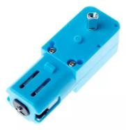
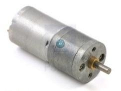
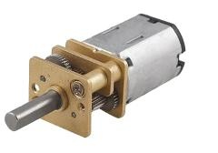
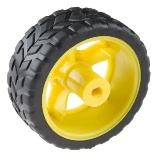
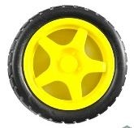
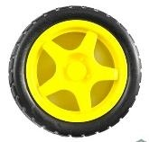
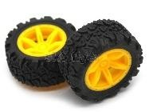
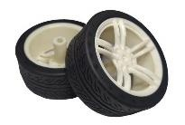
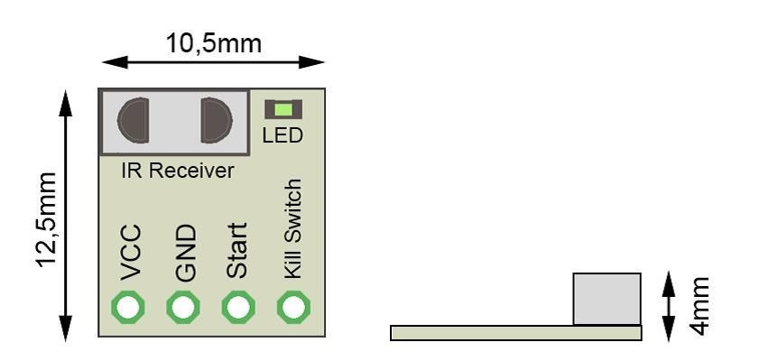

MINI SUMO
CATEGORÍA SEMI-PRO | 2026
1. Definición de Lucha de Sumo
El minisumo autónomo es una disciplina de robótica inspirada en el tradicional deporte de sumo japonés, donde pequeños robots completamente autónomos se enfrentan sobre un área circular, conocida como Dohyo, con el objetivo de expulsar a su oponente fuera del ring.
En esta competencia, la lucha no es simplemente un enfrentamiento de fuerza bruta, sino un desafío de innovación, creatividad e ingeniería. Los robots deben detectar a sus contrincantes, mantener el equilibrio, anticipar movimientos y reaccionar rápidamente a una variedad de situaciones imprevistas. Así, se fomenta el trabajo en equipo, la resolución de problemas y el aprendizaje continuo.
La dinámica del torneo se basa en enfrentamientos directos entre equipos, cada uno compuesto por un máximo de tres integrantes, de los cuales dos pueden ingresar al área de juego: un operador principal y un asistente. Mientras tanto, el resto del equipo, así como el público, observan desde la audiencia.
A continuación, se presentan las reglas y lineamientos oficiales que regirán la categoría de minisumo autónomo. Estas normas han sido diseñadas para garantizar la equidad, la seguridad y la claridad de la competencia, promoviendo una experiencia enriquecedora tanto para participantes como para espectadores.
2. Requisitos para los Robots
2.1. Especificaciones Generales del Robot
- A. Se permite cualquier diseño de robot, siempre que no viole las limitaciones de la sección 2.2.
- B. El robot debe caber dentro de un cuadrado con lado de 13 cm (130 mm).
- C. La altura máxima del robot no está restringida; sin embargo, no debe exceder el diámetro total del dohyō (77cm).
- D. La masa total del robot al inicio de un combate debe ser menor a 600 g.
- E. El robot puede expandirse después de iniciar el combate, pero no debe separarse físicamente en piezas; debe permanecer como un solo robot centralizado. Robots que violen esto perderán el combate. Tornillos, tuercas, rondanas u otras partes con masa total menor a 10 g que se desprendan no causarán la pérdida automática.
- F. Todos los robots deben ser autónomos. Se permite cualquier mecanismo de control mientras todos los componentes estén contenidos dentro del robot y no interactúe con un sistema de control externo (humano, máquina u otro).
- G. Los robots deben mostrar un número, proporcionado por los organizadores, en un lugar visible del robot para el árbitro. Este número se usa para identificar el robot.
- H. La pala/hoja del robot debe estar cubierta con una protección, excepto cuando el robot esté colocado en el dohyō y listo para pelear. No cumplir implica una advertencia; con dos advertencias, se otorgará un punto al equipo contrario.
- I. La tracción debe realizarse únicamente con 2 motores TT amarillos y llantas estándar con rin amarillo de plástico. No se permiten otros motores/ruedas en esta categoría. (ver tabla 1.)
2.2. Limitaciones / Restricciones del robot
- A. Por seguridad, el robot debe estar equipado con un sensor IR de inicio/paro operado por el árbitro.
- B. El constructor del robot es responsable de integrar dicho sensor. Las especificaciones técnicas del receptor IR se indican en el Apéndice 1.
- C. Los participantes pueden implementar su propio hardware o usar un módulo prearmado compatible con el propuesto.
- D. Es obligatorio que el módulo IR funcione correctamente: el robot debe iniciar y detenerse cuando el árbitro emita la señal con el control oficial. La responsabilidad es totalmente del equipo. Si el módulo no está instalado o no funciona, el equipo no podrá competir.
- E. En la homologación y en los combates, el módulo debe funcionar correctamente.
- F. Si durante una ronda ocurre una falla del módulo y el robot no se detiene cuando el árbitro envía la señal, se perderá esa ronda. Se recomienda y permite reemplazarlo bajo supervisión del árbitro (después de terminar la ronda). Tras reemplazar el sensor, el combate continuará si aún faltan rondas.
- G. No se permiten dispositivos de interferencia (“jammers”), como LEDs IR destinados a saturar los sensores IR del oponente.
- H. No se permiten partes que puedan romper o dañar el dohyō. No uses partes destinadas a dañar al robot o al operador rival. Empujones y golpes normales no se consideran intención de daño.
- I. No se permiten dispositivos que almacenen líquidos, polvos, gases u otras sustancias para arrojarlas al oponente.
- J. No se permiten dispositivos con llama.
- K. No se permiten dispositivos que lancen objetos al oponente.
- L. No se permiten sustancias pegajosas para mejorar tracción.
- M. No se permiten dispositivos para incrementar fuerza de succión/carga hacia abajo (p.ej. EDF, bombas de vacío, etc.)
- N. Se permite un máximo de dos banderas. Deben estar en posición vertical y permanecer dentro del perímetro del robot. Tras colocar el robot en el dohyō, solo puede tocarse para poner las banderas verticales. Una vez iniciado el combate, las banderas pueden caer.
- O. Se permite (no obligatorio) usar de una a dos banderas de cualquier color. Deben ser de tela, papel o poliéster, y la asta de plástico, madera, aluminio o fibra de carbono.
- P. La pala/hoja o extensión del robot no puede ser blanca. La bandera es excepción.
3. Requisitos del Dohyō (anillo de sumo)
3.1. Interior del Dohyō
3.2. Especificaciones del Dohyō
3.3. Exterior del Dohyō
- A. Debe existir un espacio adecuado fuera del borde externo del dohyō. Puede ser de cualquier color, material o forma, siempre que no viole el concepto de estas reglas.
- B. Esta zona, con el dohyō al centro, se llama “área del dohyō”.
3.4. Cómo se realizan los combates
- A. Un combate consta de 3 rondas de 01:00 minuto, con tiempo total de 03:00 minutos, salvo extensión por árbitros.
- B. Gana el combate el equipo que gane dos rondas o consiga primero dos puntos Yuhkoh dentro del límite. Si se cumple el tiempo y un equipo tiene 1 punto Yuhkoh, ese equipo gana.
- C. Si nadie gana dentro del tiempo, puede haber combate extendido: el primer punto
Yuhkoh gana. Alternativamente, el ganador puede decidirse por árbitros, sorteo o repetición.
- D. Si los robots se atascan, aplica 6.1.
- E. Si uno de los robots no arranca, se reinicia. Si vuelve a no arrancar, gana el robot
que se mueva.
| DISPOSITIVO | ESPECIFICACIONES Y OBSERVACIONES | EJEMPLOS |
|---|---|---|
| SISTEMA DE MOVIMIENTO Motores |
|
Admitidos


No admitidos



|
| Ruedas o tracks |
|
Admitidas

 

No admitidas


|
3.5. Desarrollo de la competencia
3.5.1. Sistema de competencia
Se usará sistema grupos – cuartos – semifinales – finales para maximizar rondas jugadas por robot.
GRUPOS
- A. Se dividirán robots en grupos según número de participantes.
- B. El orden en grupos será aleatorio tras la inauguración oficial y el check-in.
- C. Los grupos estarán disponibles en el sitio web para cada categoría.
- D. Si no hay suficientes participantes para grupos, se jugará desde el inicio con sistema piramidal (llaves), con posiciones aleatorias.
- E. Todos contra todos dentro del grupo.
- F. Puntos: victoria 1, derrota 0.
- G. Cada combate es al mejor de 3 rondas y será supervisado por 1 o 2 árbitros (principal y asistente).
- H. Las decisiones deben ser unánimes y son finales. Cuestionarlas implica descalificación.
- I. El ranking se define por puntos acumulados.
- J. Empates: criterios de desempate como diferencia de puntos/puntajes, resultado directo, u otros (voluntad de pelea, construcción/programación, conducta).
- K. Si dos robots del mismo equipo se enfrentan, deben jugar; no se permite “pasar” sin jugar ni arreglar rivales.
- L. Los que avanzan jugarán cuartos. Avanzan los mejores 2 (o más) por grupo.
- M. Tras grupos, no se aceptan objeciones ni cambios.
CUARTOS
- A. Los clasificados se emparejan según el esquema indicado (ejemplo: 1° grupo A vs 2° grupo D, etc.)
- B. Las llaves se publican en web tras concluir grupos.
- C. Eliminación directa: el que pierde sale.
- D. Mejor de 3 rondas, 3 árbitros, decisión unánime y final.
- E. Si dos robots del mismo equipo se enfrentan, deben jugar.
- F. Ganadores avanzan a semifinales.
SEMIFINALES Y FINALES
- A. Llaves publicadas en web.
- B. Emparejamientos con los últimos 4 ganadores.
- C. Ganadores de semifinales disputan el título; perdedores juegan por 3° lugar.
- D. Eliminación directa.
- E. Puntos: victoria 1, derrota 0 (para el sistema).
- F. Mejor de 3 rondas, 3 árbitros, decisión unánime y final.
- G. Si robots del mismo equipo se enfrentan, deben jugar.
- H. El ganador de la final es campeón.
3.5.2. Equipos y robots
- A. Hasta la homologación, los equipos permanecen en el área reservada.
- B. Cada equipo debe seguir el horario publicado. No lleguen tarde. Si se llama a jugar y no llegan en 5 minutos, el robot pierde el combate.
- C. Cada equipo tendrá un operador y opcionalmente un asistente. Solo ellos pueden estar en el área de espera y juego.
- D. El resto del equipo observa desde el público.
- E. Una persona puede ser operador de máximo 2 robots. El operador no puede cambiarse y debe ser el registrado.
- F. En homologación se tomará foto del robot con número visible, y también con gafete y rostro del operador.
3.5.3. Combates
- A. Durante un combate se tendrá una pausa corta máxima de 01:00 minuto definida por el juez entre rondas, exclusivamente para limpiar las ruedas o el robot, configurar tácticas y reanudar.
- B. Entre combates sí se permiten cambios, reparaciones y reprogramación.
- C. La configuración debe hacerse antes de colocar el robot en el dohyō.
- D. Una vez colocado, no puede tocarse; excepción: colocar banderas verticales cuando el árbitro lo indique.
- E. El operador tiene 5 segundos desde la señal del árbitro para activar el robot (si es necesario) con un control remoto desde distancia segura; luego debe soltar el control.
- F. Durante cada ronda, tras colocar los robots, operador y asistente no deben usar ni sostener controles u otros dispositivos para controlar robots. El teléfono solo puede usarse para grabar.
- G. No pueden retirar/tocar robots tras terminar la pelea hasta que el árbitro lo indique. Si lo hacen antes, no podrán presentar objeciones.
- A. Cada equipo debe pasar homologación para participar.
- B. La homologación se realiza al inicio.
- A. Se verificará el número del robot, visible para árbitros, y debe permanecer adherido toda la competencia (no es obligatorio que se vea durante el combate en el dohyō).
- B. Se tomará foto a cada robot con el número visible; también con gafete y rostro del operador.
- C. Se verifica dimensión colocando un marco/caja sin fondo de 13.2 × 13.2 cm (132 × 132 mm) sobre el robot.
- D. Se pesa en báscula digital: máximo 600 g con una tolerancia de 2g.
- E. Se verifica funcionamiento del sensor IR para inicio y paro.
- F. Tras homologación, el primer grupo permanece en el área de espera; los demás regresan al salón.
- G. Se verifica que la pala esté cubierta con protección.
- A. Se verifica que el número exista en el robot.
- B. Se verifica funcionamiento IR de inicio/paro.
- C. Se confirma que el operador no cambió.
- D. Se verifica protección en la pala.
- A. A instrucción del árbitro, ambos equipos colocan sus robots al mismo tiempo. Tras colocarlos, no pueden moverse. (Figura 2)
- B. Cualquier parte del robot debe colocarse detrás de las Shikiri-Sen. El robot no debe cruzar la línea hacia el rival.
- C. Debe colocarse dentro de las líneas extendidas verticalmente desde los bordes de las Shikiri-Sen.
- D. El árbitro revisa y, si está mal colocado, se recoloca.
- A. En Mini Sumo, el árbitro inicia cada ronda enviando señal de inicio por IR. En cuanto la reciben, la ronda inicia inmediatamente, sin retraso.
- B. Especificaciones del receptor IR en Apéndice 1.
- C. El inicio se realizará cuando operador y asistente estén en zona segura.
- D. Si operador/asistente salen de zona segura sin aprobación, pueden perder un punto o ser descalificados.
- A. El combate se detiene y reanuda cuando el árbitro lo anuncia.
- B. El árbitro indica cuándo colocar robots, cuándo retirarse a zona segura y cuándo retirarlos del dohyō.
- A. El combate termina cuando el árbitro lo anuncia. Se retiran robots después del anuncio.
- B. Tras retirar robots, la decisión es final y no se aceptan objeciones.
- A. Los combates constan de 3 rondas de 01:00 minuto.
- B. Un combate dura 3 minutos, iniciando y terminando a la orden del árbitro, tras retirarse a zona segura.
- A. Si el árbitro lo indica, la extensión dura máximo 03:00 minutos.
- A. Un equipo fuerza legalmente a que el robot rival toque el exterior del dohyō.
- B. El robot rival toca el exterior por sí mismo.
- C. Tras contacto, el Robot A provoca que el Robot B sea expulsado completamente; el punto es para A aunque A toque primero el exterior.
- D. El robot rival se daña y no puede continuar, y el representante lo anuncia.
- E. Ambos robots salen simultáneamente: el que es empujado se considera perdedor, aunque el empujador toque primero el exterior.
- F. Si una bandera o pieza >10 g se desprende y queda dentro del dohyō, no hay penalización. Pero si esa(s) bandera(s)/pieza(s) salen del dohyō, el robot propietario
pierde la ronda. - A. Si un robot no arranca: un reinicio. Si vuelve a no arrancar, gana el que se mueva.
- B. Si se enredan o giran sin progreso por 10 s: reinicio. Si se repite, gana el que se mueva más y muestre voluntad de pelear.
- C. Si un robot rápido queda atorado en uno lento >5 s: reinicio. Si no hay progreso, el árbitro detiene sin objeciones. Si se repite, gana el que ataque y se mueva más rápido.
- D. Si dos robots rápidos se atoran >5 s: reinicio. Si se repite, gana el que ataque más y se mueva más rápido.
- E. Si ambos salen con ruedas en el dohyō “al mismo tiempo” y no es claro quién tocó primero el exterior: repetición; las grabaciones pueden ignorarse.
- F. Si un robot tiene 1 punto y en la siguiente ronda no hay ganador, solo se permiten 2 repeticiones. Si nadie gana, el robot con 1 punto gana el combate.
- G. Ambos se mueven sin progreso o se detienen exactamente a la vez y permanecen detenidos 5 s sin tocarse. Si uno se detiene primero, tras 5 s se declara sin voluntad de pelear y el rival gana el punto, aunque el rival también se detenga. Si ambos se mueven y no es claro el progreso, el árbitro puede extender hasta 30 s.
- H. Si ambos robots con banderas tienen ruedas en el dohyō y sus banderas tocan el exterior al mismo tiempo y no es claro cuál fue primero: repetición; grabaciones pueden ignorarse.
- I. Importante: Si no se puede declarar ganador, regla especial: se coloca una botella al centro del dohyō y el primer robot que la toque con la carcasa o la pala gana.
No cuenta tocar con bandera u otra extensión. Los robots se colocan tocando la
línea blanca. - A. Desde que el robot pasa homologación (y está en espera) hasta que termina el combate (todas las rondas), no se permiten cambios ni pausas por:
- B. El robot debe iniciar y terminar el combate sin modificaciones (excepto selección de táctica) y no puede salir del área por ninguna razón.
- C. Entre rondas hay pausa corta máxima de 01:00 min para limpieza/configuración y reanudar.
- D. Cambio de batería, reparaciones o reemplazo de partes defectuosas/palas se permite después del combate y antes del siguiente.
- E. Si un robot se rompe durante el combate y no puede continuar, gana el rival. No se permite reparar.
- A. Realizar actos descritos en 2.2, 7.2, 7.3 o 7.4 es infracción y amerita advertencia. Con 2 advertencias, se otorga un punto al rival o puede haber descalificación según gravedad.
- A. Insultos al rival/árbitros, poner dispositivos de voz para insultar, escribir insultos en el robot o acciones ofensivas: infracción
- B. Prohibido gritar a árbitros u oponentes.
- C. Gestos amenazantes no tolerados.
- D. Agresividad reiterada puede eliminar al equipo y llamar seguridad.
- E. Gestos/símbolos/palabras ofensivas en la carcasa son violación.
- A. Operador/asistente no se retiran a zona segura o no obedecen al árbitro.
- B. Si el módulo IR no funciona o falta, el robot no puede competir.
- A. Un competidor entra al dohyō durante el combate, salvo que el árbitro lo detenga tras otorgar un punto y el competidor vaya a recoger el robot. “Entrar” significa:
a) Parte del cuerpo dentro del dohyō
b) Usar objetos mecánicos dentro para apoyar el cuerpo - B. Acciones:
- a) Tocar el robot tras colocarlo (excepto poner banderas verticales)
- b) Exigir detener el combate sin razón válida
- c) Tardar >60 s en reanudar, salvo extensión del árbitro
- d) Actos contrarios al fair play
- e) Salir del área de espera sin informar al oficial/árbitro la razón
- f) Remover u omitir la colocación de la protección de seguridad en la pala/hoja del robot mientras este se encuentre en el área de espera o fuera del dohyō.
7.5. Infracciones mayores
7.5.1. Se sanciona con 2 puntos Yuhkoh al adversario cuando:
- A. El robot raya la pintura del dohyō en una distancia mayor a 5 cm de ancho por 2 mm por sí mismo. No cuenta si ocurre durante el forcejeo.
- B. El robot inicia movimiento después de ser colocado sin señal de inicio del árbitro.
- C. El robot se incendia: descalificación.
8. Penalizaciones
8.1. Penalizaciones
- A. Violaciones de 2.2, 7.2, 7.3 y 7.5: el equipo pierde el combate; el árbitro otorga dos puntos al rival y ordena retirarse.
- B. Las violaciones de 7.4 se acumulan: dos infracciones menores otorgan un punto al rival.
- C. Se acumulan durante un combate.
9. Presentación de objeciones
9.1. Objeciones
- A. No se aceptan objeciones contra decisiones arbitrales.
- B. El operador puede presentar dudas al árbitro antes de terminar el combate si hay dudas sobre aplicación de reglas.
10. Flexibilidad del reglamento
- A. Si se respeta el concepto y fundamentos, las reglas son suficientemente flexibles para cambios en número de jugadores y contenido de combates.
- B. Los organizadores locales pueden modificar o abolir reglas si se publican antes del evento y se mantienen consistentes durante todo el evento.
11. Responsabilidad
- A. Los equipos son responsables de su seguridad y de sus robots, y de cualquier accidente causado por integrantes o robots.
- B. La organización RoboChallenge y el equipo organizador no serán responsables por incidentes/accidentes causados por equipos o su equipo.
- C. No producen el sensor IR de inicio/paro.
- D. No implementan ni proporcionan código para el sensor.
- E. No proporcionan garantía del sensor.
12. APÉNDICE 1 — Inicio y paro por control remoto (IR)
Explicación de uso. Puedes encontrar información detallada sobre el uso de los módulos de arranque en:
 Apéndice 1. Módulo de inicio/paro por control remoto (IR) y referencia de pines.El módulo puede alimentarse con 5 V o 3.3 V y tiene 4 pines, de los cuales 2 son
alimentación (VCC y GND).Los otros 2 pines (Start y Kill switch) indican al robot cuándo iniciar/detenerse y cuándo activar el “kill switch”. En esta competencia el “kill switch” no es obligatorio, pero se explica
brevemente. Por seguridad del robot, el equipo decide si lo usa.Por seguridad se recomienda usar la configuración de 4 pines: además de monitorear Start, puedes monitorear Kill switch.
Importante: si tu código entra en un estado donde no monitorea Start correctamente, o tu robot sufre una caída de voltaje (brown out) durante la pelea, puede dejar de monitorear
Start. En ese caso puedes monitorear Kill switch o seguir los diagramas indicados.El módulo tiene un LED verde que indica si recibió correctamente el comando de inicio/paro o si hay un problema.
Importante: al encender tu robot, asegúrate de que el LED verde esté APAGADO. Eso significa que el robot está listo para aceptar la señal del control.
Si el LED verde está ENCENDIDO, el robot no recibirá otro inicio. En ese caso debes pedir al árbitro que presione “Stop” en el control y luego hacer un ciclo de energía
(apagar/encender el robot).¿Cómo funciona el módulo?
- A. Al encender el robot, el LED verde debe estar apagado: listo para comandos.
- B. El árbitro realiza la programación inicial del módulo. El LED parpadea varias veces:
el robot “aprende” el control del árbitro (identificador único).
- C. El módulo queda listo para los comandos de inicio/paro.
Pin Start (inicio)
- A. Al encender, Start está en lógica “0” (estado “encendido/listo”).
- B. Al iniciar la pelea, el árbitro presiona Start y pasa a lógica “1” (estado “iniciado”).
- C. Al terminar, el árbitro presiona Stop y vuelve a “0” (estado “detenido”).
Los módulos pueden encontrarse a la venta en:
https://e-robots.com.mx/producto/modulo-de-inicio/
https://www.ingenieromaker.com/product-page/remote-robot-trigger
https://www.jsumo.com/microstart-sumo-minisumo-robot-start-module
11. Contacto
Para cualquier duda técnica, aclaración sobre el reglamento o consultas de logística, los participantes pueden comunicarse con el comité organizador a través de los medios oficiales listados a continuación. Se recomienda dirigir las preguntas específicas de la competencia al responsable de la categoría para obtener una respuesta más ágil.
Enlace de registro
Página del Torneo
Responsable de categoría Sumo Semi-Pro
M.C. Jesús Leonel Arce Valdez
julio.ie@regionllanos.tecnm.mx
(676) 102-26-90
3.6. Homologación
3.6.1. Al inicio del grupo
3.6.2. Antes de cada combate
4. Inicio, Alto, Reanudar y Fin del combate
4.1. Colocación del robot
4.2. Inicio
4.3. Alto, Reanudar
4.4. Fin
5. Tiempo del combate
5.1. Duración
5.2. Extensión
6. Puntuación
6.1. Se otorgará un punto “Yuhkoh” cuando:
6.2. Si se requiere decisión arbitral para definir ganador, se considera:
a) Méritos técnicos de movimiento/operación
b) Penalizaciones durante el combate
c) Actitud de los jugadores
6.3. El combate se detendrá y se reiniciará bajo estas condiciones:
6.4. Reparaciones, modificaciones e interrupciones imprevistas
a. No reparaciones durante el combate
b. No cambio/carga de batería durante el combate
c. No cambio de pala durante el combate
d. No reprogramación durante el combate (selección de táctica previa no cuenta como programación) e. Si la pala se desprende, no puede recolocarse; debe seguir sin pala hasta terminar
7. Infracciones
7.1. Infracciones
7.2. Conducta indebida
7.3. Equipo de protección y zona segura
Falta grave: